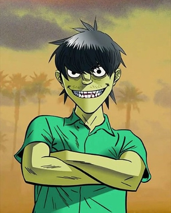
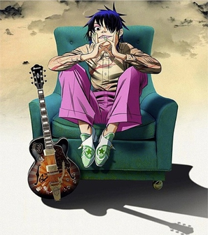
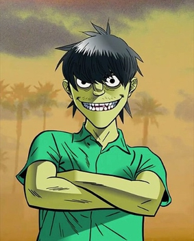
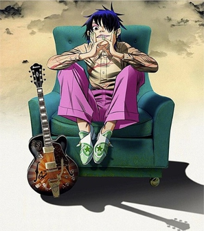

Gorillaz
Gorillaz are an English virtual band created in 1998 by musician Damon
Albarn and artist Jamie Hewlett. The band primarily consists of four animated
members: 2-D, Murdoc Niccals, Noodle, and Russel Hobbs. Their fictional universe
is presented in music videos, interviews and short cartoons. In reality, Albarn is
the only permanent musical contributor, and Gorillaz' music often features collaborations
with a wide range of featured artists. Remi Kabaka Jr. became the producer for the band in
2016 after several years of providing the voice of Russel Hobbs and was listed as an official
member alongside Albarn and Hewlett in the 2019 documentary Gorillaz: Reject False Icons.[1]
Members
 




- 2-D
- Murdoc Niccals
- Noodle
- Russel Hobbs
Studio albums
- Gorillaz (2001)
- Demon Days (2005)
- Plastic Beach (2010)
- The Fall (2010)
- Humanz (2017)
- The Now Now (2018)
- Song Machine, Season One: Strange Timez (2020)